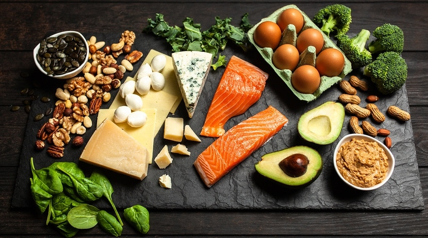
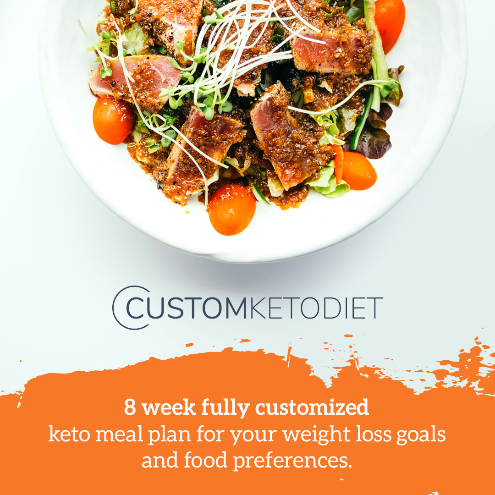

Once Called A 'Fad', The Keto Diet Is Now Accepted As Mainstream

Despite Warnings From ‘Experts’ Who Cling To Outdated Research... The Ketogenic Diet Is More Popular Than Ever
There are plenty of celebrities who make it no secret that the keto diet works for them:
- Kim & Kourtney Kardashian
- LeBron James
- Gwyneth Paltrow
- Megan Fox
- Adriana Lima (Victoria’s Secret model)
- Tim Tebow
- Halle Berry
But you don’t need a personal nutritionist or personal chef to reap the benefits from the keto diet.
The ketosis diet goes against everything we have been taught in the past.… but if you read-on with an open mind, it will begin to make sense.
This alternative diet teaches followers that all natural fats are your friend. In fact, eating natural fats can cause you to lose weight rapidly.
It sounds outrageous, but think about it… up until recently we were lead to believe that ALL fats are bad. But now we are hearing that there are such things as ‘good fats’.
Well, as you read on, you will learn that ALL natural fats are good for you, and how consuming a lot of fat (with a restricted carbohydrate intake) will help you reach a state of ketosis: which means your body is running on fat for energy.
Fat loss is great, but many people use the keto diet to help treat a multitude of different diseases such as:
- Metabolic Syndrome (including high blood pressure)
- Wards off Dementia
- Insulin Resistance
- McArdle Disease
- Polycystic Ovary Syndrome (PCOS)
- Type 2 Diabetes
- Some Cancers
- Autism
- Epilepsy
- Parkinson’s Disease
- Asthma
- Traumatic Brain Injury
- Multiple Sclerosis
- Nonalcoholic Fatty Liver Disease
- Alzheimer’s Disease
- Migraine Headaches
Advocates of the ketosis diet state:
Fat doesn’t make you fat – fat combined with carbohydrates makes you fat.
Remember when ‘experts’ used to tell us not to eat any more than two eggs a week? Now mainstream dieticians say you can eat all the eggs you want. These are the same experts also told us that sugar is safe – when in reality sugar is a carcinogen (cancer loves to feed on sugars).
Your Body Turns Carbohydrates Into Sugar
When you eat carbohydrates (including whole grains), your body turns those carbs directly into sugar (glucose) to be used as fuel… so if you have a high carbohydrate diet; you’re essentially on a high sugar diet. In fact, some carbs turn into more sugar than eating pure sugar itself!
Consuming too much carbohydrate (sugar) spikes your insulin levels… over time, your body develops insulin resistance. A little bit of insulin resistance causes weight gain, but if the problem worsens, you can develop Metabolic Syndrome.
Which Side Effect Would You Prefer?
The keto diet treats type-2 diabetes. Yet most people would prefer the easy option and simply pop a pill to fix the problem. But some side-effects of type-2 diabetes drugs are what nightmares are made of…
The side effects of type 2 diabetes drugs:
– Genitals becoming infected with flesh-eating bacteria (rare)
– Upset stomach
– Skin rash or itching
– Risk of liver disease
– Weight gain
– Swelling of legs or ankles
The side effects of the keto diet:
– Weight loss
– Promotes heart health
– More energy
– Better concentration
– Reduces acne, brightens skin
– Aided hormone balance
– Increased insulin sensitivity (this is a good thing if you have a pot belly)
It seems a ‘no-brainer’ of a decision when presented the choices. But most people choose a prescription – with the (rare) possibility of their genitals being slowly consumed by a flesh eating bacteria that’s resistant to antibiotics.
“But what about all that cholesterol?”
The keto diet focuses on natural fats which are high in HDL cholesterol… which isn’t bad for you.
As a general rule, HDL is considered good cholesterol, while LDL is considered bad. This is because HDL carries cholesterol to your liver, where it can be removed from your bloodstream before it builds up in your arteries. LDL, on the other hand, takes cholesterol directly to your arteries.
Most doctors test for cholesterol levels using outdated measuring practices… which measures both HDL and LDL together. That means that a test may come back showing high cholesterol… but it doesn’t reveal if it’s high in the good kind of cholesterol or bad.
Your body needs cholesterol. We need it for just about every bodily function. Most of our hormone production is dependent on it. We need cholesterol to produce a chemical in our brains called serotonin (serotonin is a feel-good hormone). Your body needs cholesterol for cell function and repair.
Because cholesterol is so essential, if you don’t consume enough of it, your body will produce its own (in the liver) to meet your daily needs.
The reason our body thrives on fat is that it’s a diet that our ancestors thrived on for thousands of years – a diet based on animal protein and fat. This is why similar diets such as the Paleo diet works.
The Reason You’re Being Lied To
The lipid hypothesis is the cornerstone of the ‘fat makes you fat’ lie… and although this hypothesis has no scientific proof or conclusive research to back it up, certain industries perpetuate the myth because there is so much profit in it.
The ‘lipid hypothesis’ has zero scientific research to back its claims. But it is used by Big Pharma to push cholesterol-lowering drugs.
When in reality, using total cholesterol as a marker for heart disease is outdated (as mentioned earlier).
Total cholesterol really doesn’t tell us much, unless it is too low, in which case we need to assist the liver to raise our cholesterol levels.
We are fed diet lies all the time for profit
A classic example of ‘food experts’ lying to us is the widely believed myth: ‘Breakfast is the most important meal of the day’… this is a lie. The word breakfast literally means ‘to break your fast’. Fasting is where you go for a controlled period of time without eating – and is great for weight loss.
You have probably heard of the new weight-loss buzzword ‘intermittent fasting’ – this is where you skip breakfast and eat an early lunch, then eat an early dinner. Of course, you won’t see this type of diet talk popularized on your favorite chat show… because selling breakfast products to the masses is a billion-dollar industry.
Mainstream TV will never promote the ketosis diet because if everyone started following it, the outcome would be catastrophic to dozens of mega-corporations and industries that make billions of dollars promoting the current false ‘healthy eating plan’… such as low-fat diet foods and cholesterol-lowering medications.
When people start to take notice of diets such as keto or paleo, the wheat industry or the sugar industry (or any other corporation with an agenda) always rolls out a paid ‘expert’ for dietary advice on your favorite morning chat show to muddy the waters. Insisting that you need to eat breakfast, eat a lot of whole grains, and be sure to eat at least 5 servings of fruit and veg every day – this is also a clever marketing lie to sell more produce (you should still eat your vegetables though).
More and more doctors agree with the undeniable health benefit that the ketogenic diet delivers:
“I firmly believe the ketogenic diet can be a tremendously beneficial strategy for optimizing your health and disease prevention and treatment plan, including cancer.” – Dr. Mercola
“Rapid and reliable weight loss for people following a ketogenic diet is due to lowered insulin levels and the body being forced to burn stored body fat for energy.” – Dr. Axe
“The Ketogenic Diet helps people go from a sugar-burner to a fat-burner in half the time it takes with other diets.” – Dr. Oz
FREE Keto Diet eBook!
Click below for a beginners guide to the ketogenic diet. No need to add any of your details, simply click the image banner below for the free download.
The Best Part of Keto…
What people most like about the keto diet, not only does the weight drop off faster – but the weight stays off longer!
When you’re on a high fat, low carb diet; you feel hungry less because when your body is ‘fat adapted’ meaning you burn fat like it’s burning coal – a long and slow release of energy.
This is opposed to your body burning carbs, which is like burning paper (burns rapidly). This is why eating carbs causes you to feel hungry all the time.
The best part of the keto diet is all the delicious foods you have to choose from!
Such as:
- Bacon (check out this article: Bacon DOESN’T cause cancer)
- Butter
- Pork Chops
- Pork Belly
- Lamb Chops
- Low Carb Sausages
- Cheese
- Cream
- Chicken Wings
- Paté
- Steak
- Eggs
- Most above-the-ground vegetables
- And a lot more…
Lose Weight And Feel Amazing Without Giving Up Your Favorite Foods
Maybe you’ve downloaded and read the free keto ebook (above). You’ve even watched some videos on how to follow a keto diet, but aren’t sure how to put all the pieces together?
Or you do know how to follow a keto diet, but still not confident… due to a lack of structure?
Also, eating all this delicious food that you used to think was ‘naughty’ can make you feel nervous… especially if you’re new to the keto diet.
I get it!
While it sounds simple to follow and succeed on a keto diet, many people prefer a step-by-step process that removes all the guesswork…
As you’d expect, this isn’t your run-of-the-mill “here are some recipes brought together from random blogs” meal plan… that many nutrition ‘gurus’ promote (for way too much money).
Instead, we’ll provide you with all the tools you need to reach your ideal body weight and health goals in an effective, convenient, cost-efficient, and enjoyable manner.
Here’s what you’ll get:
- An eight-week meal plan created based on the expertise of certified nutritionists, personal trainers, and chefs.
- Meals that have calorie and macronutrient content tailored to your specific situation and goals.
- A nutrition plan with food variety to ensure you’ll get a wide range of nutrients and boost the likelihood you’ll stick to your diet.
- Meals that are based on your favorite food preferences to make your diet enjoyable and help you stay on track with your plan.
- Detailed recipes with step-by-step instructions to make meal preparation super simple (no prior cooking experience needed).
- A downloadable shopping list each week that details every needed ingredient you’ll need the upcoming seven days.
- Options on how you can customize every meal even more to suit your taste buds.
And more…
In other words, we’ve done everything we can to design an effective, convenient, and enjoyable meal plan to help you reach your health and figure goals.
It won’t even feel like you’re on a diet…
Click the image box below now to get started:
